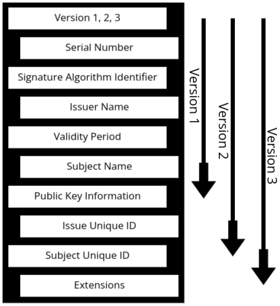

Introduction to Network security
- Network Security is the practice of protecting a computer network and its resources from unauthorized access, cyberattacks, and data breaches. It ensures that only authorized users can access information while keeping data confidential, intact, and available.
- In simple words, Network Security is like a protective shield that safeguards computers, devices, and data from cyber threats.
Why is Network Security Important?
- 📌 Protects Sensitive Data – Ensures that personal and business data is safe from cybercriminals.
- 📌 Prevents Unauthorized Access – Only trusted users can access private networks.
- 📌 Ensures Data Integrity – Prevents hackers from modifying important information.
- 📌 Maintains Network Availability – Stops attacks that can crash or disrupt services.
- Steal customer login details.
- Transfer money illegally.
- Leak sensitive financial data.
Common Threats in Network Security
- 🔹 Unauthorized Access – Hackers breaking into a system without permission.
- Example: Guessing or stealing passwords to log into someone’s account.
- 🔹 Malware (Viruses, Worms, Trojans, Ransomware) – Malicious programs that harm or
control systems.
- Example: A virus that corrupts important files and makes them unusable.
- 🔹 Phishing Attacks – Fake emails/websites tricking users into sharing sensitive data.
- Example: A fake email pretending to be from a bank, asking for login details.
- 🔹 Denial of Service (DoS) Attacks – Overloading a website or system to make it crash.
- Example: A hacker sending thousands of fake requests to a website, making it unavailable for real users.
- 🔹 Man-in-the-Middle (MITM) Attacks – A hacker intercepting and altering communication
between two users.
- Example: An attacker spying on an online shopping transaction and stealing credit card details.
How Network Security Works (Protective Measures)
- 🔹 Firewalls – Work like security guards, blocking harmful traffic.
- 🔹 Encryption – Converts data into unreadable code to keep it safe.
- 🔹 Two-Factor Authentication (2FA) – Adds an extra verification step before login.
- 🔹 Virtual Private Networks (VPNs) – Encrypts internet traffic for secure browsing.
- 🔹 Antivirus & Anti-malware – Detects and removes malicious software.
Goals of Network Security
Network security aims to protect data and systems from threats. Its main goals are:
- Confidentiality: Keeping data private and ensuring only authorized access. For example, using encryption to secure passwords.
- Integrity: Ensuring data is accurate and unaltered. Hashing techniques help maintain data accuracy.
- Availability: Ensuring systems are always accessible. Network security prevents DDoS attacks that cause downtime.
- Authentication: Verifying identity before granting access. This is like showing an ID before entering a building, often enhanced with two-factor authentication.
- Non-repudiation: Ensuring actions can't be denied. Digital signatures and logs provide proof of transactions.
Goals of Network Security
When we talk about network security, it’s not just about putting up firewalls or installing antivirus
software. The ultimate aim is to achieve specific goals that ensure your data and systems remain
safe
and functional. Think of network security like a castle's defense system—it's not just about
building
walls, but about protecting the kingdom in several different ways.
So, what are the goals of network security?:
- Confidentiality: Confidentiality is about keeping sensitive data private and
ensuring that only authorized people have access to it. The idea is to prevent anyone (hackers,
unauthorized employees, etc.) from viewing or accessing private information.
- Just like you wouldn’t want someone snooping through your personal documents or stealing your password, businesses and individuals need to make sure that sensitive information—like financial records, customer details, or trade secrets—stay hidden from unwanted eyes.
- Imagine you're sending a password to someone through email. Without proper security, a hacker could intercept the message and steal the password. Using encryption, you make sure that even if someone intercepts the email, the password is unreadable to them.
- Integrity: Integrity ensures that the data being transmitted or stored is
accurate
and has not been altered by unauthorized individuals. It means that the data you send or store
is
the same as when it was created or shared, without tampering.
- Imagine you’re ordering a product online. What if someone changed the quantity or price of the item during the transaction? You’d end up paying more or receiving the wrong product. Integrity ensures that this doesn’t happen, protecting the accuracy of your information.
- During a financial transaction, if a hacker changes the amount being transferred from your account, that would be an integrity breach. By using techniques like hashing (to check data integrity), systems can ensure data is not tampered with.
- Availability: Availability means that the network, systems, and data are always
accessible when needed. It’s about making sure that legitimate users can always access the
resources
they require, without interruptions or downtime.
- Imagine a hospital’s computer system crashes during an emergency. That would be catastrophic. Whether it’s cloud storage, business applications, or even websites, availability is crucial for business operations and user trust.
- In a DDoS (Distributed Denial of Service) attack, hackers flood a website with so many requests that the site becomes unavailable. Network security prevents such attacks, ensuring that websites, systems, and apps remain available to their users.
- Authentication: Authentication is the process of verifying who you are before
granting access to a network or system. Think of it like showing your ID card before entering a
building. It ensures that only authorized users can access resources.
- You don’t want just anyone logging into your bank account or accessing your personal files. Authentication is the first line of defense against unauthorized access.
- When you log in to a website using your username and password, that’s authentication in action. To strengthen it, many websites also use two-factor authentication (2FA), where you get a code on your phone to prove it’s really you trying to log in.
- Non-repudiation: Non-repudiation means that once something is done, it can’t be
denied. It ensures that someone cannot deny their actions or the authenticity of the data.
- If you make an online purchase, you want to be sure that the transaction is legitimate. Non-repudiation guarantees that there’s evidence proving the action took place, such as logs or signatures.
- If a company makes a financial transfer, the transaction is logged with digital signatures to prove that the transfer was legitimate and authorized. This prevents someone from saying, "I didn’t make that payment," even if they did.
OSI Security Architecture (Also Referred to as ISO Security Architecture)
- Security is a critical aspect of any networked system. The OSI Security Architecture, defined by ISO (International Organization for Standardization), outlines how security threats are categorized, what mechanisms are used to prevent or mitigate them, and what services ensure a secure communication environment.
- The reason it is sometimes called ISO Security Architecture is because the OSI (Open Systems Interconnection) model itself was developed by ISO. Since ISO is the organization that defined this security framework, some materials refer to it as "ISO Security Architecture." However, the correct and widely used term is OSI Security Architecture, as it specifically applies to securing network communication under the OSI model.
- Imagine you own a house. You lock the doors to keep it safe, but what if the lock is weak? Or what if a thief doesn’t even try to break the lock and instead enters through a window? That’s exactly how security works in the digital world too! No matter how strong one aspect of security is, there can always be another weak spot that attackers exploit.
Understanding Threats and Attacks
- Threat: The Potential for Danger
- A threat is a potential risk that can exploit a weakness in the system.
- Your Wi-Fi network at home has no password. Even if no one has hacked it yet, the possibility of someone stealing your internet or spying on your online activity is a threat.
- Attack: When the Threat Becomes Real
- An attack is a deliberate attempt to compromise a system’s security by exploiting a vulnerability.
- If a hacker connects to your unprotected Wi-Fi, intercepts your network traffic, and steals your personal information, this is an attack.
Three Components of OSI Security Architecture
- Security Attacks – Different types of attacks that can compromise security.
- Security Mechanisms – Methods used to prevent, detect, or respond to these attacks.
- Security Services – Services designed to achieve security goals like confidentiality and authentication.
Security Attacks
- A security attack is any action that compromises the security of a system, individual, or
organization. It can lead to:
- Loss of data (important files getting deleted or stolen)
- Data corruption (your files being changed without permission)
- Ransomware attacks (hackers locking your files and demanding money)
- Virus and malware infections (harmful programs damaging your system)
- Defacement of servers (hacking and changing websites to spread messages or misinformation)
- There are two main types of security attacks:
- Passive Attacks – The attacker secretly monitors or eavesdrops on data.
- Active Attacks – The attacker modifies, disrupts, or creates false data.
Passive Attack
- A passive attack is when an attacker quietly listens in or monitors communication without making any changes.
- Key Features of Passive Attacks:
- ✔ No changes to the data
- ✔ Only reading, observing, or eavesdropping
- ✔ Hard to detect because nothing is altered
- Imagine two friends, Bob and Alice, chatting. A hacker named Darth secretly listens to their conversation but doesn’t interfere. That’s a passive attack.
Types of Passive Attacks
- Release of Message Contents: The attacker reads confidential information being
exchanged.
- Example:
- You send a private email to your bank, and a hacker secretly reads it.
- A spy listens to a secret phone call between two diplomats.
- Prevention:
- Encryption – If Bob encrypts his message before sending it, Darth won’t be able to read it.
- Example:
- Traffic Analysis: Even if data is encrypted, the attacker can still learn who is talking to
whom, how often, and for how long.
- Example:
- A hacker sees that a CEO and CFO of a company are emailing each other frequently, even though the emails are encrypted. This might indicate an important financial deal.
- Prevention:
- Using VPNs or Tor Networks – These hide communication patterns.
- Example:
Active Attacks
- An active attack is when an attacker modifies data, disrupts communication, or creates fake messages.
- Key Features of Active Attacks:
- ✔ Data is changed, deleted, or inserted
- ✔ More harmful than passive attacks
- ✔ Easier to detect but harder to prevent
Let’s look at the four main types of active attacks.
- Masquerade Attack (Impersonation): The attacker pretends to be someone else to
gain unauthorized
access.
- Example:
- A hacker steals your login credentials and logs into your account as you.
- An attacker sends a fake email pretending to be your bank, asking for your password.
- Prevention: Two-factor authentication (2FA) – Even if a hacker steals your password, they won’t be able to log in without the second security check.
- Example:
- Replay Attack (Copy-Paste Attack): The attacker captures a legitimate message
and sends it again to trick the recipient.
- Example:
- You send a message: "Transfer ₹10,000 to Alice."
- The attacker records this message and sends it again later, causing a second transaction without your permission.
- Prevention: Use timestamps and session tokens – This prevents old messages from being replayed.
- Example:
- Modification of Messages (Message Tampering): The attacker alters a message
before it reaches the recipient.
- Example:
- Bob sends a message: "Allow John to access the files."
- Darth intercepts it and changes it to "Allow Tim to access the files."
- Now, the wrong person gets access!
- Prevention: Digital signatures – This ensures messages aren’t altered during transmission.
- Example:
- Denial of Service (DoS Attack): The attacker overloads a system so that real
users can’t access it.
- Example:
- A hacker floods a website with too many requests, making it crash.
- A spam bot sends thousands of login attempts, preventing real users from logging in.
- Prevention: Firewalls and rate-limiting – These detect and block unusual traffic.
- Example:
Differences Between Passive and Active Attacks
- Passive attacks just observe the communication without making any changes, while on the other hand, active attacks modify or disrupt the data.
- Passive attacks are less harmful as they only gather information, whereas active attacks are more harmful as they can alter or damage data.
- Passive attacks are hard to detect because they do not interfere with the system, whereas active attacks are easier to detect due to noticeable disruptions.
- An example of a passive attack is eavesdropping on a network, while an example of an active attack is hacking and modifying data.
Security Services
- A security service is a feature that protects data and ensures secure communication between users or systems.
- Why are they important?
- ✔ Prevents unauthorized access
- ✔ Ensures data remains private
- ✔ Maintains trust and authenticity in communication
- ✔ Protects against cyberattacks and fraud
- Security services are provided by a secured system to ensure safe and reliable communication.
- Types of Security Services: There are six major security services that help in securing data and
communication:
- Authentication
- Peer Entity Authentication
- Data Origin Authentication
- Access Control
- Data Confidentiality
- Data Integrity
- Non-Repudiation
- Authentication
1: Authentication (Verifying Identity)
Authentication ensures that the sender and receiver are who they claim to be. It prevents imposters
from accessing sensitive information.
There are two types of authentication:
- Peer Entity Authentication (Real-Time Verification): This verifies that the
entity you are communicating with is genuine during an ongoing session.
- Example:
- When you log into a banking website, the system continuously checks whether you are still the same user and haven’t been replaced by a hacker.
- Two devices connected over a network verify each other’s identity in real-time.
- Protection Methods: Multi-factor authentication (MFA) for extra security
- Example:
- Data Origin Authentication (Verifying the Sender): This confirms who sent the
data, ensuring that the message actually comes from the claimed sender and not an attacker.
- Example:
- You receive an email from your bank. This service ensures that the email really came from the bank and not a scammer.
- A digital signature on a document proves that it was sent by the correct sender.
- Protection Methods: Digital signatures and cryptographic verification
- Example:
2: Access Control (Who Can Access What?)
- Access control restricts who can access data and what they can do with it.
- Example:
- A company’s HR system allows only HR employees to view salary data.
- Your cloud storage (like Google Drive) lets you decide who can view, edit, or download your files.
- Protection Methods:
- Role-Based Access Control (RBAC) – Users are assigned permissions based on their role.
- User authentication (passwords, biometrics, etc.)
3: Data Confidentiality (Keeping Data Private)
- Confidentiality ensures that only authorized users can read the data. Even if hackers steal the data, they won’t be able to understand it without proper decryption.
- Example:
- When you send a WhatsApp message, it is encrypted, meaning only the recipient can read it.
- A secured website (HTTPS) ensures your credit card details are protected while shopping online.
- Protection Methods:
- Encryption – Converts data into unreadable format (e.g., AES, RSA).
4: Data Integrity (Ensuring Data is Not Tampered)
- Integrity ensures that the data remains unchanged during transmission. If someone tries to modify the data, the receiver can detect it.
- Example:
- If you download software from an official website, a checksum (hash value) verifies that it has not been altered by hackers.
- A bank transaction ensures that the transferred amount is not changed by an attacker in transit.
- Protection Methods: Hash functions (SHA-256, MD5) – Create a unique fingerprint for data.
5: Non-Repudiation (No Denying Later)
- This prevents the sender from denying that they sent a message or transaction. It provides proof that an action was taken by a specific user.
- Example:
- A person sends an email and later denies sending it> Non0repudiation ensures proof exists that they sent it.
- In online banking, a customer cannot deny making a money transfer because the system records their digital signature.
- Protection Methods:
- Digital Signatures – Ensures messages are tied to a specific sender.
- Transaction logs – Maintain records of all activities.
Security Mechanisms
- A security mechanism is a tool or process that helps protect data and systems from attacks.
- Why are security mechanisms important?
- ✔ They enforce security policies
- ✔ They detect and prevent attacks
- ✔ They help in secure communication and data protection
- Think of it like this: If security services are the laws, then security mechanisms are the police and tools that enforce those laws. 🚓🔒
- Security mechanisms are divided into two types:
- Specific Security Mechanisms (Designed for particular security functions)
- Pervasive Security Mechanisms (Work in the background to support overall security)
1. Specific Security Mechanisms
These mechanisms are directly used to provide security. They are designed for specific security
functions like encryption, authentication, and access control.
Here are some key specific security mechanisms:
- Encipherment (Encryption): This mechanism converts readable data (plaintext) into an unreadable
format (ciphertext) to prevent unauthorized access.
- Example:
- WhatsApp messages are encrypted, meaning only the sender and receiver can read them.
- Websites using HTTPS protect your credit card details during online shopping.
- Methods Used:
- Symmetric Encryption – Same key is used for encryption and decryption (AES, DES).
- Asymmetric Encryption – Uses a public key for encryption and a private key for decryption (RSA, ECC).
- Example:
- Digital Signatures: A digital signature ensures that a message or document is authentic and
hasn’t been modified.
- Example:
- When you download software, a digital signature confirms that it came from the official source.
- Online contracts use digital signatures to prevent fraud.
- Methods Used:
- Hash functions (SHA-256, MD5)
- Public Key Infrastructure (PKI)
- Example:
- Access Control: Restricts who can view, modify, or use a resource.
- Example:
- Only employees in HR can access payroll data.
- Two-factor authentication (2FA) for online banking.
- Methods Used:
- Role-Based Access Control (RBAC)
- Multi-Factor Authentication (MFA)
- Example:
- Authentication Exchange: Verifies the identity of users before granting access.
- Example:
- Logging into a website using username and password.
- Fingerprint or face unlock in smartphones.
- Methods Used:
- Biometric authentication (fingerprints, retina scan, face ID)
- Password-based authentication
- Example:
2. Pervasive Security Mechanisms
Unlike specific security mechanisms, these work in the background to provide overall security. They
help detect, prevent, and recover from security breaches.
Here are the key pervasive security mechanisms:
- Security Audit & Monitoring: Tracks system activities to detect and respond to security threats.
- Example:
- Banks monitor unusual transactions to prevent fraud.
- Companies use firewalls to track unauthorized access.
- Methods Used:
- Log analysis
- Example:
- Security Recovery: Helps systems recover from security attacks and ensures normal operations
resume quickly.
- Example:
- Ransomware recovery – Restoring files from a backup after an attack.
- Disaster recovery plans – Restoring data after a server crash.
- Methods Used:
- Backup and restore
- Disaster recovery planning
- Example:
- Event Logging: Records all security-related events for future analysis and forensic
investigation.
- Example:
- Failed login attempts are recorded to detect hacking attempts.
- Security systems log all changes to critical files.
- Methods Used: Automated log analyzers
- Example:
- Security Awareness & Training: Educates users about cybersecurity threats and best practices.
- Example:
- Employees undergo phishing awareness training.
- Schools teach students about cybersecurity basics.
- Mehods Used:
- Cybersecurity Workshops.
- Regular security drills.
- Example:
Authentication Applications
Now that we’ve covered security in general, let’s focus on authentication, which ensures that only the right people get access.
Understand the Need for Authentication
- Imagine you're logging into your bank account. How does the system know it's really you? That's where authentication comes in!
- Authentication ensures that only the right person (or device) is allowed access to a system, preventing unauthorized users from getting in.
- In networks, authentication helps verify the identity of users, devices, and systems before granting access to sensitive data or services.
- Without authentication, anyone could pretend to be you, leading to data breaches, identity theft, and system misuse.
What are the common threats related to authentication?
- Phishing Attacks: Hackers trick users into revealing their passwords by pretending to be a legitimate website.
- Brute Force Attacks: Automated programs try multiple password combinations until they find the right one.
- Man-in-the-Middle (MITM) Attacks: A hacker secretly intercepts and alters communication between two parties.
- Credential Stuffing: Attackers use stolen usernames and passwords from one site to try and log in to another.
- Session Hijacking: An attacker steals a user's active session, gaining unauthorized access to their account.
How authentication ensures security in communication?
- Username & Password: The most basic method, but weak if passwords are not strong or are reused.
- Two-Factor Authentication (2FA): Adds an extra layer of security, requiring a second verification step like a code sent to a phone.
- Biometric Authentication: Uses fingerprints, facial recognition, or retina scans for secure and unique user identification.
- Digital Certificates (SSL/TLS): Ensures encrypted and secure communication over networks like the internet.
- Kerberos Authentication: A network authentication protocol that uses encrypted tickets to verify user identity without sending passwords.
Authentication Mechanisms
- Authentication mechanisms are the different methods used to verify the identity of users, devices, or systems before granting access.
- Since passwords alone are not always secure, advanced mechanisms use cryptography, certificates, or secure ticket-based systems to enhance security.
- Two well-known authentication mechanisms are Kerberos and X.509,
each designed for different
scenarios:
- Kerberos: Used in network environments where users need to authenticate securely without repeatedly entering passwords.
- X.509: Used in internet security, such as SSL/TLS certificates, to verify identities online.
Kerberos
- Kerberos is a network authentication protocol, which means it helps verify whether a user is real and trusted before allowing access to a network. Imagine you want to enter a high-security building. You can’t just walk in; you need an ID card or pass that proves you are authorized. Kerberos works the same way but for computer networks.
- The main goal of Kerberos is security. It ensures that only verified users can access network resources and prevents attackers from pretending to be someone else.
Why Do We Need Kerberos?
- Let’s say you’re logging into your college Wi-Fi or a company server. The system needs to
confirm that:
- You are who you say you are (authentication).
- You are authorized to access specific resources (authorization).
- Your login details are not stolen while being sent over the network.
- Without proper authentication, hackers can steal passwords and pretend to be real users. Kerberos solves this by using tickets instead of passwords for authentication.
Key Features of Kerberos
- Client-Server Architecture
- The user (client) requests access to network services.
- The server provides access only after authentication.
- Uses Symmetric Key Encryption
- The same key is used for both encryption and decryption, making communication secure.
- Relies on a Trusted Third Party (TTP)
- This trusted authority is called the Key Distribution Center (KDC).
- KDC manages authentication and provides secret keys securely.
Understanding Kerberos with an Example

Let’s say you want to access a company’s internal database. Here’s how Kerberos ensures secure access step by step:
- You Request Access
- You (the user) send a request to Kerberos’ Key Distribution Center (KDC), saying, "Hey, I need access to the database!"
- Authentication Server (AS) Checks Your Identity
- KDC has two parts:
- Authentication Server (AS) – Verifies who you are.
- Ticket Granting Server (TGS) – Gives access to network services.
- KDC has two parts:
- You Decrypt the Ticket
- This ticket is like a sealed letter that only you can open. You decrypt it using your secret key (like a password). The decrypted ticket contains a hash code (a special encrypted signature).
- Proving Your Identity
- You send the hash code back to AS as proof that you successfully decrypted the ticket. If the hash code is correct, AS confirms, "Yes, this person is real!"
- Getting a Service Ticket
- AS now involves Ticket Granting Server (TGS). TGS generates a Service Ticket (also called a session key). This ticket is like a VIP pass that allows you to access network services.
- Accessing the Network
- With the service ticket, you can now communicate securely with the database or any other network service. The service ticket ensures that you don’t have to send your password again. Instead, you use the ticket to prove your authenticity.
Why is Kerberos Secure?
- No Passwords Sent Over the Network
- Instead of sending your password, Kerberos uses encrypted tickets.
- Session Keys for Each Login
- Every session has a unique secret key, making it hard for attackers to reuse old data.
- Mutual Authentication
- Not only does the server verify the user, but the user also verifies the server, preventing phishing attacks.
- Prevents Replay Attacks
- Even if an attacker captures your ticket, they cannot reuse it because Kerberos timestamps each ticket.
Kerberos is widely used in corporate networks, government systems, and even Windows Active Directory. It ensures that only real, trusted users can access network resources while keeping everything secure.
X-509 Authentication Service
- X.509 is a digital certificate standard used for public key authentication in network security.
- It helps verify identities over the internet by issuing digital certificates that prove someone is who they claim to be.
- Imagine you visit a website, and your browser shows a padlock icon (🔒). This means the website has a valid X.509 certificate, proving it’s legitimate and not a fake site trying to steal your data.
Why Do We Need X.509?
- Without proper authentication, attackers can impersonate websites, servers, or even people.
- X.509 helps prevent such attacks by:
- Providing a trusted way to verify identities using digital certificates.
- Encrypting communications using Public Key Infrastructure (PKI).
- Preventing Man-in-the-Middle (MITM) attacks, where attackers try to intercept data.
How Does X.509 Work?
- X.509 uses public key cryptography, where each user has:
- A public key (shared with others).
- A private key (kept secret).
- A Certificate Authority (CA) issues digital certificates that bind a public key to a specific user or organization.
Structure of an X.509 Certificate
- Every X.509 certificate follows a specific format containing important details.
- 📌 Key Fields in an X.509 Certificate:
- Version (V1, V2, V3): Defines the certificate format. V3 is the latest version with extra security features.
- Serial Number: A unique identifier assigned by the Certificate Authority.
- Signature Algorithm Identifier: Specifies the algorithm used to sign the certificate (e.g., RSA, SHA-256).
- Issuer Name: The name of the Certificate Authority (CA) that issued the certificate.
- Validity Period:
- Defines the start and expiration date of the certificate.
- After expiration, the certificate is no longer trusted.
- Subject Name: The entity (person, organization, or website) that owns the certificate.
- Public Key Information: Contains the public key used for encryption and authentication.
- Issuer Unique ID (Optional in V2 & V3): Helps distinguish between certificates from the same CA.
- Subject Unique ID (Optional in V2 & V3): Differentiates multiple certificates issued to the same subject.
- Extensions (Only in V3): Provides extra security features like:
- Key Usage: Defines what the certificate can be used for.
- Certificate Policies: Rules for certificate use.
- Alternative Subject Names: Allows multiple domain names.
Understanding X.509 with an Example
- Let’s say you visit https://www.example.com. Your browser checks the website’s X.509 certificate:
- It verifies the Issuer (CA):
- Checks if the Certificate Authority (e.g., DigiCert, Let’s Encrypt) is trustworthy.
- It checks the Validity Period:
- If the certificate is expired, your browser warns you.
- It ensures the Public Key matches the website:
- Prevents attackers from using fake certificates.
- If everything checks out, your browser trusts the website, and you can browse securely.
Why is X.509 Secure?
- Prevents Identity Fraud – Ensures only verified entities get certificates.
- Uses Strong Cryptography – Public-private key encryption makes data secure.
- Supports Certificate Revocation – If a certificate is compromised, it can be revoked.